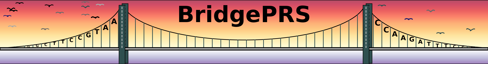

BridgePRS download comes with example toy data in the folders
data/pop_AFR, data/pop_EUR and data/pop_EAS. Each directory
contains (1) GWAS summary statistic files, (2) genotype files (plink binary
format), and (3) phenotype files (txt format). A continuous and
binary phenotype are given in the phenotype files, both phenotypes use
the same summary statistics, For more information on file type
requirements or how to create population configuration files for your
own data, see Guide: Input Data.
BridgePRS uses configuation files which contain the information of the
populations being analysed: the population name, paths for the input
data and the column headers of the summary statistics files. Three
example configuations files are provided, one for each population:
data/eur.config, data/afr.config, data/eas.config. These files
Run the demo:
To analyses the continuous trait (y)
./bridgePRS pipeline go -o out1 --config_files data/afr.config data/eur.config --phenotype y
After this runs successfully, you can analyze the binary phenotype "y.binary" with the following command:
./bridgePRS pipeline go -o out2 --config_files data/afr.config data/eur.config --phenotype y.binary
Results:
Please see the next page for interpretation of the result on the toy data.